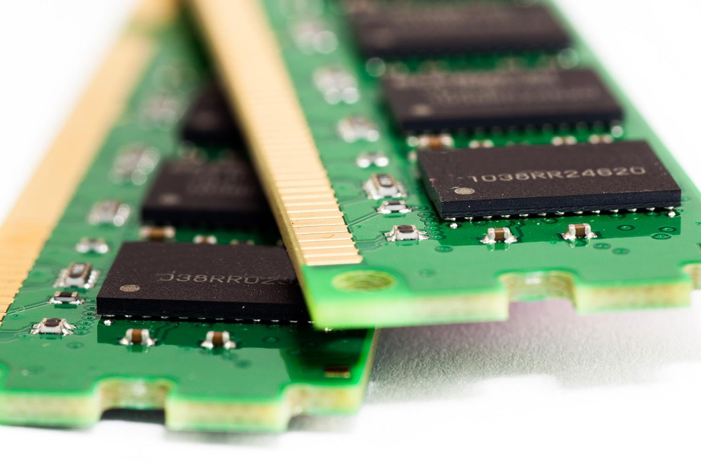
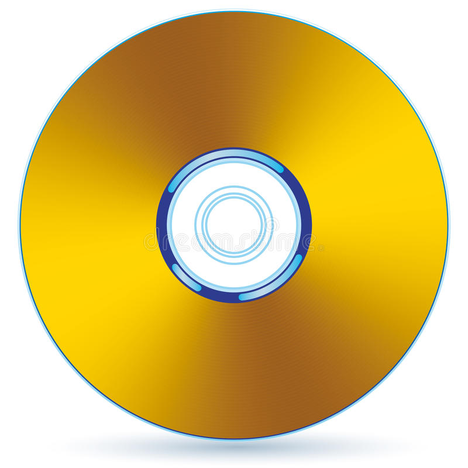
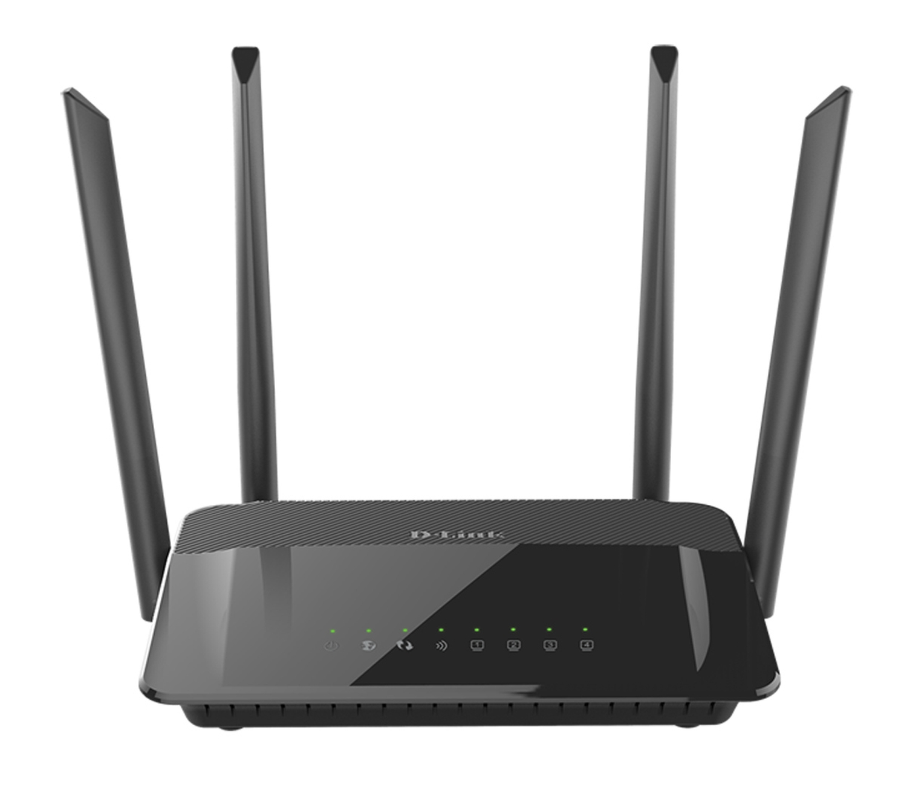
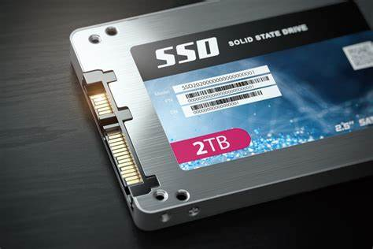

<!DOCTYPE HTML>
    <html>
        <title>Computer Hardware</title>
        <meta charset="UTF-8">
        <meta name="description" content="Computer Hardware">
        <link rel="stylesheet" type="text/css" href="styles.css">
    </html>
    <body>
        <h1>Everything you need to know is here! </h1>
        <h2> If you like computers then you are in the right place!</h2>
        <hr/>
        <p class="anotherfont"> Today we will have a look at computer parts and what they do, what are they, etc!</p> 

        <table border="1" class="fonts">
            
            <tr><td class="TD"><strong>NAME</strong></td>    <td class="TD"><strong>DESCRIPTION</strong></td>   <td class="TD"><strong>PICTURE</strong></td></tr>
            <tr> <td>CPU (Central Processing Unit)  </td>     <td>CPU or also know as "the brain" of the computer, it's the most important part of a laptop, computer, pc, etc, and its job is to process the orders/instructions that come from the operating system, other components from the computer or from programs.  </td>    <td>   </td> </tr>
            <tr> <td>RAM (Random Access Memory)  </td>     <td>Some people might underestimate the power or RAM. But actually, it's one of the essential things in a computer. RAM's job is to give you access to multiple programs simultaneously with good speed if you bought good RAM; if not you will struggle a little bit.     </td>    <td>  </td> </tr>
            <tr> <td>HD (Hard Drive)  </td>     <td>A hard drive is a component in pc. It helps you store your operating system, programs, games, images, videos, documents, etc. </td>    <td>  </td> </tr>
            <tr> <td>CD-ROM (Compact Disc Read-Only Memory)</td>     <td>CD-ROM (Compact Disc Read-Only Memory) is an Optical Disc containing software data, audio, programs, whose memory is read-only.  </td>    <td>  </td> </tr>
            <tr> <td>USB (Universal Serial Bus) flash drive  </td>     <td>A USB flash drive is a tiny external device that plugs into your computer, laptop, television, camera, etc. And what it does is saves data so you can recover from it or you just need to watch a movie and then you plug the USB flash drive into your TV and you are good to go. It usually has a capacity between 2GB and 64GB depending on the drive that you bought.
            </td>    <td>  </td> </tr>
            <tr> <td>Network Card</td>     <td>Network Card is very important because it acts as the interface between a computer and a network table. The main purpose is to prepare and control data on the network.  </td>    <td>  </td> </tr>
            <tr> <td>Router  </td>     <td>The router is a device used to receive, analyze, and forward data packs between computer networks.  </td>    <td>  </td> </tr>
            <tr> <td>Graphics Card  </td>     <td>The graphics card is hardware that is used to increase the video memory of a computer. The better graphics card you get the better display is.   </td>    <td>  </td> </tr>
            <tr> <td>Power supply  </td>     <td>The power supply is a component of a computer that supplies all other hardware with power. You must make sure to get the right supply so the other components work properly.  </td>    <td>  </td> </tr>
            <tr> <td>Solid-State Drive  </td>     <td>SSD (Solid-State Drive) is a new generation of storage in laptops, Computers, etc. It’s using flash-based memory, which is much faster than the Normal Hard Drive. It’s a good idea to upgrade to an SSD because it’s much faster than the Hard Drive.  </td>    <td>  </td> </tr>
          
        </table>
        
        <hr/>

        <h2>
            Citation 
        </h2>
        <div class="linksfont">
        <a href="https://www.howtogeek.com/694869/what-is-a-cpu-and-what-does-it-do/">What is a CPU? </a> <br/>  <br/>
        <a href="https://www.avast.com/c-what-is-ram-memory">What is a computer RAM?</a>  <br/>  <br/>
        <a href="https://www.buildcomputers.net/what-is-a-hard-drive.html"> What is a hard drive?</a> <br/>  <br/>
        <a href="https://www.avast.com/c-what-is-ssd"> What is SSD?</a>  <br/>   <br/>
        <a href="https://www.computerhope.com/jargon/c/cdrom.htm"> What is a CD-ROM?</a>  <br/>   <br/>
        <a href="https://www.qualitylogoproducts.com/blog/what-is-a-flash-drive/"> What is a USB flash drive?</a>  <br/>   <br/>
        <a href="https://www.easytechjunkie.com/what-are-network-cards.htm"> What is a Network Card?</a>   <br/>   <br/>
        <a href="https://www.javatpoint.com/router"> What is a Router?</a>   <br/>   <br/>
        <a href="https://www.geeksforgeeks.org/what-is-a-graphics-card/">What is a Graphics Card? </a>   <br/>   <br/>
        <a href="https://www.computerhope.com/jargon/p/power-supply.htm"> What is a Power Supply?</a>    <br/>   <br/>
      </div>
    
    <hr/>
    <h1> Thank you so much for your time! We appreciate it!</h1>
    
    </body>